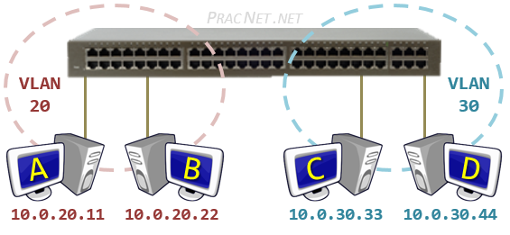
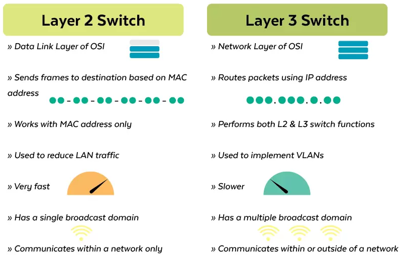
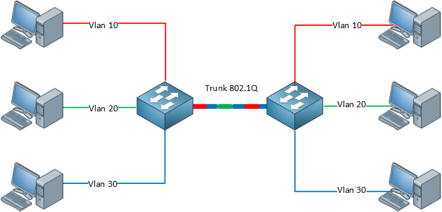

Yerel Ağlar - LAN/VLAN
Yerel ağlarda haberleşmeyi sağlayan ethernet çerçevesinde(frame) 48 bitlik adres kullanılır. MAC adresi 16’lık sayı sisteminde 12 tane karakter ile gösterilir.
| 16 bit | → 24 0000 |
| 48 | → 16 tane 24 |
İlk 6 karakterlik ilk 24 bit üretici kodunun son 6 karakter ise seri numarasını belirtir.Bir üretici aynı MAC adresiini birden fazla karar vermez.Dolyısıyla MAC adresleri dünyada tektir. * Birden fazla aynı MAC adresi aynı ağ üzerinde(LAN,VLAN vb) olmamalıdır.
| Windows | → CMD |
| → ipconfig | |
| → getmac | |
| Linux | → ifconfig |
Adres Çözümleme Ağdaki Bilgisayarlar başlangıçta diğer bilgisayarların mac adreslerini bilemez. MAC adreslerini öğrenmek için;
ARP(Adress Resulotion Protocol) (Adres Cözümleme Protokolü)
Bu protokol ikinci katmanda çalışır.Ağdaki Bilgisayarların MAC adreslerini öğrenmek ve bu cihazdaki ARP tablosunu güncellemek en temel görevdir.
SORU** ARP tablosunda;statik kayıt ne işe yarar? 1970 de bilgisayar ağları tasarlanırken gelişimi hakkında kesin bilgi olmadığında statik(önü açık ) bırakılmıştır.
YAYIN ADRESİ(BROADCAST ADDRESS)
Tüm yerel ağı temsil eden tek bir adrestir .Bu adrese gönderilen paket ağdaki tüm cihalara aynı anda uaştırılır.İkinci veya üçüncü katmanda yayın mesajı gelir.Yayın mesajlarında ne gibi fark vardır?
İkinci katmanda yayın adresi göndermek için çerçevedeki hedef mac adresindeki kısmında tüm bitler 1 yapılır. Dolayısıyla hedef adresi FF:FF:FF:FF:FF:FF yapılır.Ağa yeni bağlanan her cihaz kendi mac ve IP adreslerini içeren bir yayın mesajı gönderir. Her bilgisayarda ve anahtarda aynı ağdaki cihazlarla tutulan IP ve MAC adreslerinin tablosuna "ARP TABLOSU" denir. ARP Tablosu dinamik olarak güncellenir,ancak istenirse elle düzenleme ya da statik kayıt işlemi yapılabilir.
YAYIN ALANI
Bilgisayarların doğrudan mac adresleriyle haberleştikleri alandır.Bir yayın paketi gönderildiğinde bunu alabilen tüm cihazlar aynı yayın alanındadır. Bir bilgisayr kendi yayın alanında olmayan başka bir bilgisayarla haberleşmek için "ağ geçidinden" geçmek zorundadır.
ÇARPIŞMA ALANI
Bir yayın alanı içerisinde bir veya birden fazla çarpışma alanı
bulunur.Aynı çarpışma alanındaki bilgisayarlar birbirine gelen her
paketi görürler,ancak sadece kendi mac adreslerine gelen her paketi
görürler. Çarpışma alanı aynı anda bir pc tarafından kullanılabilir.
İki PC aynı anda paket göndermek isterse çarpışma(collision)
oluşur.Adını burdan alır.
1)Kaç tane yayın alanı vardır? 2
2)Kaç tane çarpışma alanı vardır? 3
3)Her çarpışma alanında kaç tane bilgisayar vardır?
4)Her yayın alanında kaç tane bilgisayar vardır?
Birinci yayın alanında 3 tane
İkinci yayın alanında 8 tane
*YAYIN ALANI:mecburen ağ geçidi kullanılır.
*ÇARPIŞMA ALANI:Birbirlerinin verisini görecekler.
A ile B aynı anda paket gönderebilir mi? Yaçarpışma olur ya da sıra
B ile C aynı anda paket gönderebilir mi?
B ile C aynı Pc gönderirse olur,ancak farklı olursa aralarındaki
topolojileri bilmediğimiz için bilemeyiz.
C yayın mesajı gönderdiğinde tüm pc’lere gider mi?
Evet tüm Pclere gider.
B ile C aynı arasındaki trafiği F görür mü?
Normal zamanda göremez.Ancak örneğin aynalama gibi işlemerde
görebilir.
Anahtar üzerinde pc’lerin haricinde dış dünya ile iletişim kurmak için
bağlantı yapılan porta "upink" poru denir. Anahtarın bilgisayara
bağlanan normal portlarına(bakır portlara 45 port) "giriş portu"
denir.Genel olarak 100mb/s-1000mb/s olurken "uplink portları" genellikle
daha kapasiteli olur. Anahtarları birbirinden ayıran bir diğer özellikte
"demir gücü kapasitesi"anahtarın aynı anda çevirebileceği trafik
miktarına "switchfabric" ya da "through put"denir.
AĞ GEÇİTLERİ(GATEWAY)
Ağ geçidi tanımı yönlendirme,protokol çevirme veya güvenlik uygulaması gibi işlemleri yapan tüm cihazları kapsar.Sıradan bir PC ,3.katman(L3) anahtar,yönlendirici veya özel üretilmiş donanım olabilir. Ağ geçitleri üzerindeki ağ arayüzüne(interface) bağlı olarak ethernet,Frame Relay,ATM,PPPoE gibi protokollerin hepsinin kullanılabilme özelliğine sahip olduğundan bazı kaynaklardan protokol çevirici olarak adlandırılır.
Önceden bahsedildği gibi anahtarlar çarpışma alanına geçemezler.Bu
nedenle kablolara göre daha fazla tercih edilir. Ancak anahtarlar da
yayın trafiğini geçebilirer.Bünyesinde çok fazla anahtar bulunan yerel
ağlar,yayın paketlerin çokluğu ağı hantallaştırır.Bu nedenle LAN’ları
birbirinden çok alt ağa bölmek performansı arttıracaktır. Örnek Yayın
Mesajları
*IPV4 İIPV6 mesajları
*Komşuluk mesajları
*Donanım keşif mesajları
*Ip alma (DHCP)mesajları
*Virüs gibi kötü yazılımlar
Alt Ağa Bölmenin temel olarak iki yolu vardır
Klasik Yöntem (Fiziksel Ağ Geçidi Kullanma)
Klasik yöntemde herbir ağ için bir ağ geçidi kullanılması
zorunludr.Dolayısıyla ciihazların,bağlantıları ve topolojilerin
sınırları en önemli kısıtlardır.Bir vlan yapısında ise fiziksel bir
müdahale olmadan hatta uzaktan bağlanarak ağ istenilen şekilde
özelleştirilebilir. Sanal Ağlar(VLAN)
yönlendirici,Kablosuz Ap,Güvenlik Duvarı,PC vb.
Aynı ağ her yerde kullanılabiliyor.
Geleneksel yapıda ağları birbirinden ayrılması için ağ geçidi
kullanılır
Bir anahtarda çok sayıda ağ(VLAN) kullanabiliyoruz.
Ağları bölmenin faydaları
- İşletme Kolaylığı: Ağlar küçük olduğunda sorunu çözmek kolaylaşır. Ağ isimleri, IP grupları ve kullanım yerleri eşleştirilerek hiyerarşik sistemler oluşturulabilir.
- PC sayısını azaltmak: Her bir ağdaki pc sayısını azaltarak yayın alanını daraltmak, fazlalık yayın mesajlarını azaltmak ve performansı arttırmak
- Güvenlik: Birbirine erişimi kısıtlamaması gereken ağlar arasında erişim denetim listeleri (Access Control List ~ ACL) oluşturularak erişim kısıtlanabilir.
Esneklik: Eğer ağı VLAN ile bölersek; farklı coğrafyadaki bilgisayarlar aynı VLAN'da olabilir ya da aynı anahtar üzerinde birden fazla farklı VLAN olabilir.
VLAN ANAHTARLAR
Üzerinde sanal ağlar tanımlanabilen anahtarlardır.Sıradan anahtarlarda
üstün olmasının en önemli sebebi ayarlanabilir olmasıdır. Bu nedenle
yönetilebilir anahtarlar da denmektedir.Vlan anahtarın üzerindeki
portlar gruplandırılarak birden çok sanal ağ oluşturulabilir.

Görsel kaynağı: https://www.practicalnetworking.net/stand-alone/routing-between-vlans/
Her bir sanal anahtar ayrı bir ağ gibi çalıştırılabilir.Bu sanal ağlara "VLAN" denir.Her bir vlan’ın kendine özel Vlan Id isminde bir tanımlayıcı numarası olur. Anahtarları fizikse portları Vlan ID’leri ile eşleştirilerek ağlar düzenlenir.Aynı vlan numrasına sahip portlar aynı sanal ağa aittir.
Bazı durumlarda VLAN yapılandırılması portlardan ve fiziksel
bağlantılardan bağımsız olarak yapılabilir.Örneğin pc’nin MAC
adreslerine göre ya da kullanıcı kimlik doğrulama yöntemine göre
(parola,parmak izi ) Vlan ataması yapılabilir.
Vlan anahtarlar kullanıldığında birden fazla sanal ağı oluşturursa bu
alt ağlar arasında trafiğin yönlendirilmesi gerekmektedir. Bu yönlendirme
işlemi anahtarın kendi üzerinde veya ayrı bir yönlendirici cihazla yapmak
mümkündür.

Görsel kaynağı: https://www.qsfptek.com/qt-news/how-to-choose-best-aggregation-switch.html
Anahtar üzerinde yönlendirme yapılacaksa 3 katmanda(L3) çakıştırılacak
bir anahtar kullanılmalıdır.

*Görsel kaynağı: https://planetechusa.com/layer-2-vs-layer-3-switches
IEEE 8021.q VLAN protokolü
Dot1q olarak ta bilinir. Ethernet protokolü ilk tasarlandığında VLAN ihtiyacı yoktu. 1998 yılında yayınlanan 802.1q protokolü ile Ethernet protokolü VLAN farkındalığı kazandı.

Görsel kaynağı: https://www.ictshore.com/free-ccna-course/vlans-configuration-cisco-switch/
trunk (tagged) port: Anahtarın herhangi bir portundan birden fazla VLAN taşınması gerekiyorsa o port trunk olarak yapılandırılmalıdır. Aynı zamanda bu bağlantıya da "trunk" denir. Genellikle iki anahtar arasında kullanılır ancak ihtiyaca göre 1 bilgisayara bile trunk bağlantı verilebilir. Anahtarlar, bu portta gelen-giden trafiklere bakarak başlık bilgisindeki trafiğin ilgili VLAN'a gitmesini sağlar.
acces (untagged) port: Bu portta VLAN etiketleri olmaz. Anahtar üzerinde config yapılarak, bu porttan gelen-giden tüm trafiğin belirli bir VLAN'a gitmesi sağlanır.

Görsel kaynağı: https://networklessons.com/switching/802-1q-encapsulation-explained
Cisco firması trunk/access sözcüklerini kullanırken diğer üreticiler genellikle tagged/untagged sözcüklerini tercih etmektedir.
ANAHTAR KULLANIM MİMARİSİ

Görsel kaynağı: https://blog.router-switch.com/2014/04/network-design-with-examples-core-and-distribution/
-
OMURGA(CORE)
Üçüncü katman veya daha üstü anahtar kullanılır.Genellikle tüm Vlanlar burda oluşturulur.Ağın tüm yönlendirme yükü bunun üzerindedir.Bu nedenle genellikle yedekli kullanır.Performansı çok fazladır.Binalar arası bağlantıyı sağlamak için kullanılır.Bu nedenle çok sayıda fiberoptik port sergilerler.Modüler yapıdadırlar,yani port sayıları ve türleri modüler halinde takılıp çıkartılabilir.Modülerin takıldığı yere "şase" denir.Fiziksel olarak çok yer kaplarlar ve pahalıdırlar.

Görsel kaynağı: https://thenetworkinstallers.com/blog/fiber-optic-installation-process/ -
Dağıtım(Distrubution)Katmanı
Omurga anahtarında bağlı olan ve binaların içerisinde küçük bir omurga gibi düşünebileceğimiz anahtarlardır.Omurga anahtarına göre daha ucuzdur.L2 veya L3 olabilir. -
KENAR
Son kullanıcı cihazlarının bağlandığı anahtarlardır.Bu nedenle özel görevleri olabilir.
İhtiyaca göre :
802.1x(Kimlik Doğrulama)
PoE(802.3aaf) Enerji göndermek için kullanılır.
Captive Portal

Görsel kaynağı: https://blog.router-switch.com/2014/04/network-design-with-examples-core-and-distribution/
Örnek:
20 portlu bir VLAN anahtar 4 portlu bir ağ geçidine
bağlanabiliyorAşağıdaki durumları yorumlayınız.
1)Her portun port sayısı 5’er tanedir.
Böyle bir zorunluluk yoktu.̊
2)Bir valan anahtar üzerine doğrudan bağlanacak PC sayısı 16’dır
16 tane de olabilir daha fazla da olabilir.
3)Her vlana atanmış portlar ardışık olmak zorundadır
Öyle bir şey yok.Esneklik özelliği vardır .